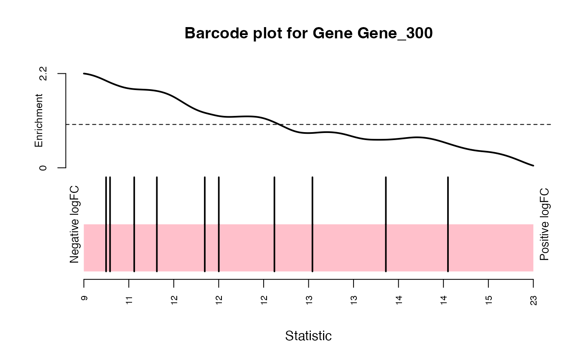

Create a Barcode plot for the Hit
The ScreenR object obtained using the
create_screenr_object
the matrix that will be used to perform the linear model analysis
An object created with makeContrasts
function.
Number of barcode to have under the median
A gene name to plot
Quantile to display on the plot
Title of the plot
The barcode plot
object <- get0("object", envir = asNamespace("ScreenR"))
matrix_model <- model.matrix(~ slot(object, "groups"))
colnames(matrix_model) <- c("Control", "T1_T2", "Treated")
contrast <- limma::makeContrasts(Treated - Control, levels = matrix_model)
plot_barcode_hit(object, matrix_model,
contrast = contrast,
gene = "Gene_300"
)
#> Using classic mode.

#> NULL